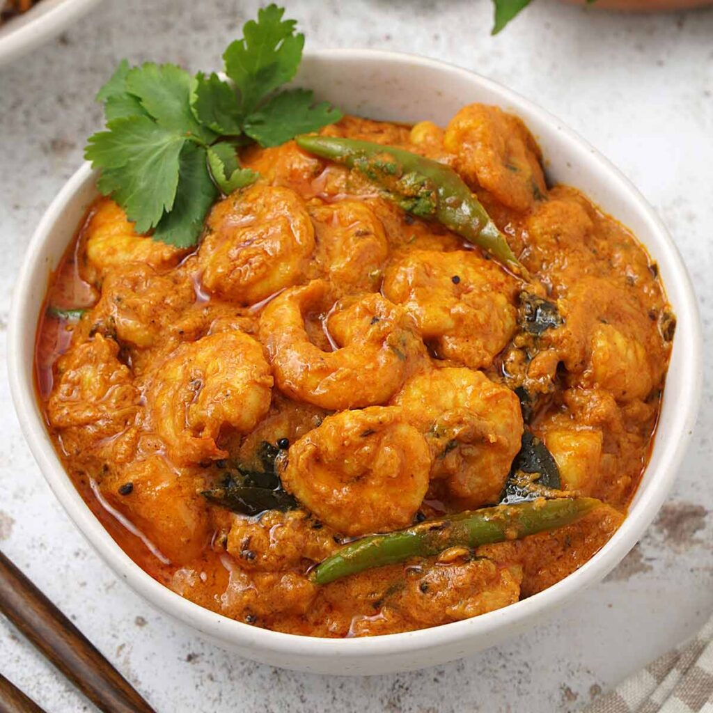

Prawn Curry
Home
Description
- Sauté Aromatics: Heat oil in a pan over medium heat. Add the chopped onion and sauté until golden brown. Add garlic and ginger, cooking until fragrant (1-2 minutes).
- Cook Tomatoes: Add the chopped tomatoes and cook until softened and saucy, about 5-7 minutes.
- Add Spices: Stir in curry powder, cumin, ground coriander, and chili powder. Cook for 1-2 minutes to release the flavors.
- Simmer Sauce: Pour in the coconut milk and mix well. Add water if needed to adjust consistency. Simmer for 5-7 minutes.
- Add Prawns: Toss the prawns into the sauce and cook for 4-5 minutes, or until they turn pink and are cooked through.
- Season and Garnish: Taste and adjust salt. Garnish with fresh coriander leaves.
- Serve: Serve hot with steamed rice, naan, or flatbread, along with a squeeze of lemon or lime.